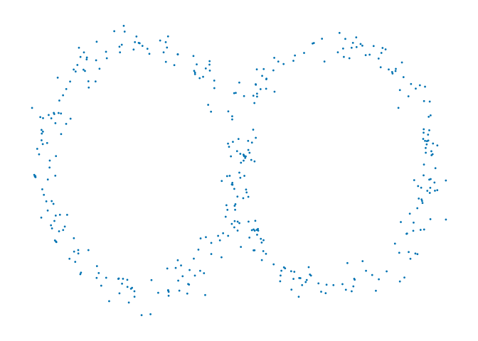
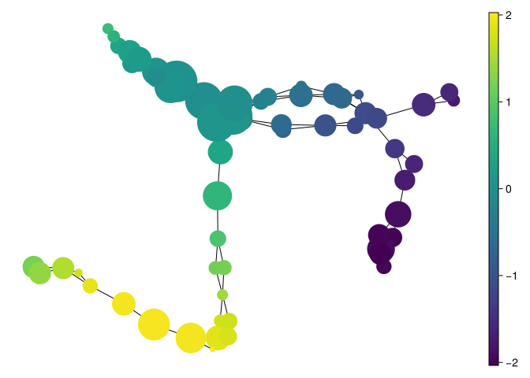
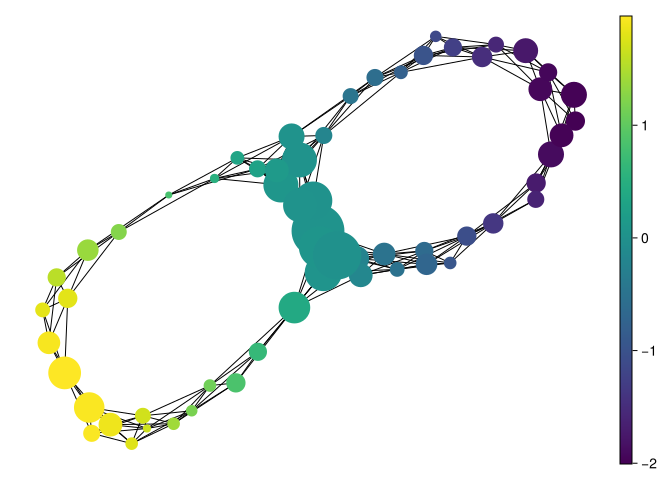

using MetricSpaces
using MetricSpaces.Datasets
using TDAmapper
using TDAmapper.DomainCovers
using TDAmapper.Refiners
using TDAmapper.Nerves
using Random
using Graphs
using DataFrames
Random.seed!(2026)TaskLocalRNG()We have already seen two specific mapper-like constructions:
The local TDAmapper.jl API makes the general pattern explicit: a mapper algorithm is a combination of
Each step answers a different question. The cover selects the neighborhoods we inspect, the refiner decides which members stay together locally, and the nerve decides how their overlaps are recorded. Separating the questions makes changes easier to explain.
Examples of covers include:
In classical Mapper, the cover lives in the image of a filter function. In Ball Mapper, the cover lives directly in the metric space through balls around landmarks.
Once we have a raw cover, we may refine each element further:
DBscan clusters each cover element into connected dense pieces;Trivial() keeps each cover element as a single node.This is where “connectedness” enters the discrete picture: in the classical Reeb-graph story we would take connected components, but in data analysis we often replace that step by a clustering method.
Finally, we build a graph from the refined cover:
SimpleNerve() adds an edge whenever two cover elements overlap;MinCountNerve(n) requires at least n shared observations for an edge;JaccardNerve(t) requires \(|A\cap B|/|A\cup B|\geq t\);SimplicialNerve(2) also records triangles from common three-way intersections.SimpleNerve() produces the 1-skeleton of the usual nerve. Intersection thresholds change that graph; they are additional modeling choices. A triangle from a three-way intersection belongs to the full nerve and can fill a graph cycle. Three pairwise intersections alone do not imply a common three-way intersection.
The generic mapper function takes one object for each of those stages:
using MetricSpaces
using MetricSpaces.Datasets
using TDAmapper
using TDAmapper.DomainCovers
using TDAmapper.Refiners
using TDAmapper.Nerves
using Random
using Graphs
using DataFrames
Random.seed!(2026)TaskLocalRNG()X_demo = annulus(300)
L_demo = farthest_points_sample_ids(X_demo, 30)
M_demo = mapper(
X_demo,
EpsilonBall(X = X_demo, L = L_demo, epsilon = 0.2),
Trivial(),
SimpleNerve(),
)
M_demoMapper graph with 30 vertices and 27 edgesThat is the pattern Ball Mapper uses. We can also inspect the three stages directly:
demo_cover = EpsilonBall(X = X_demo, L = L_demo, epsilon = 0.2)
raw_memberships = make_cover(demo_cover)
refined_memberships = TDAmapper.Refiners.refine_cover(X_demo, raw_memberships, Trivial())
demo_graph = make_graph(X_demo, refined_memberships, SimpleNerve())
(raw_sets = length(raw_memberships), refined_sets = length(refined_memberships),
graph_nodes = nv(demo_graph), graph_edges = ne(demo_graph))(raw_sets = 30, refined_sets = 30, graph_nodes = 30, graph_edges = 27)Trivial() keeps each nonempty cover element intact; it does not test whether its members form one connected group. M_demo.C[j] stores the original observation indices in node j. With a clustering refiner, one raw set may instead create several nodes. In this API DBSCAN noise points are grouped into an extra local node, so inspect that node before treating it as connected.
For graph-valued nerve rules, we read the output as follows:
Node size is scaled by member count and color can summarize any observation statistic. Overlapping nodes can count an observation more than once. The default drawing uses a graph layout; its distances are not distances in the dataset. A mean node color can also hide a mixture of very different observations.
X_three = EuclideanSpace(reshape([0.0, 1.0, 2.0], 1, :))
pairwise_only = [[1, 2], [2, 3], [1, 3]]
common_point = [[1, 2], [2, 3], [2]]
(pairwise_graph_edges = ne(make_graph(X_three, pairwise_only, SimpleNerve())),
common_graph_edges = ne(make_graph(X_three, common_point, SimpleNerve())),
pairwise_triangles = n_triangles(make_graph(X_three, pairwise_only, SimplicialNerve(2))),
common_triangles = n_triangles(make_graph(X_three, common_point, SimplicialNerve(2))))(pairwise_graph_edges = 3, common_graph_edges = 3, pairwise_triangles = 0, common_triangles = 1)Both graphs have three edges. The first full nerve has no triangle, since no observation belongs to all three sets; the second has one, supplied by observation 2. Their identical graph drawings conceal different first homology. SimplicialNerve returns a simplicial-complex object rather than a graph, so the graph plotting and graph cycle-count formulas used here do not apply to that object directly. Enumerating higher intersections also becomes expensive as the number of sets grows.
using CairoMakie
using TDAplotsRandom.seed!(2026)
X = EuclideanSpace(add_noise(figure_eight(400; r = 1.0), 0.08))
metricspace_plot(X, markersize = 4)┌ Warning: Found `resolution` in the theme when creating a `Scene`. The `resolution` keyword for `Scene`s and `Figure`s has been deprecated. Use `Figure(; size = ...` or `Scene(; size = ...)` instead, which better reflects that this is a unitless size and not a pixel resolution. The key could also come from `set_theme!` calls or related theming functions. └ @ Makie ~/.julia/packages/Makie/UjJJY/src/scenes.jl:238

We now build two mapper graphs using the same landmarks but different radii:
L = farthest_points_sample_ids(X, 60)
M_small = mapper(
X,
EpsilonBall(X = X, L = L, epsilon = 0.25),
Trivial(),
SimpleNerve(),
)
mapper_plot(M_small, node_values = node_colors(M_small, first.(X)))┌ Warning: Found `resolution` in the theme when creating a `Scene`. The `resolution` keyword for `Scene`s and `Figure`s has been deprecated. Use `Figure(; size = ...` or `Scene(; size = ...)` instead, which better reflects that this is a unitless size and not a pixel resolution. The key could also come from `set_theme!` calls or related theming functions. └ @ Makie ~/.julia/packages/Makie/UjJJY/src/scenes.jl:238

M_large = mapper(
X,
EpsilonBall(X = X, L = L, epsilon = 0.4),
Trivial(),
SimpleNerve(),
)
mapper_plot(M_large, node_values = node_colors(M_large, first.(X)))┌ Warning: Found `resolution` in the theme when creating a `Scene`. The `resolution` keyword for `Scene`s and `Figure`s has been deprecated. Use `Figure(; size = ...` or `Scene(; size = ...)` instead, which better reflects that this is a unitless size and not a pixel resolution. The key could also come from `set_theme!` calls or related theming functions. └ @ Makie ~/.julia/packages/Makie/UjJJY/src/scenes.jl:238

Both graphs have the same 60 nodes because we retained the same landmarks and used Trivial(). Increasing radius enlarges the memberships and can add edges. It makes overlap less selective; it does not necessarily reduce the graph cycle count or collapse the graph to fewer nodes.
Inspect the changes numerically:
function mapper_diagnostics(M)
membership_counts = [count(C -> i in C, M.C) for i in eachindex(M.X)]
components = length(connected_components(M.g))
(nodes = nv(M.g), edges = ne(M.g), components = components,
graph_cycles = ne(M.g) - nv(M.g) + components,
covered_points = count(>(0), membership_counts),
maximum_memberships = maximum(membership_counts))
end
comparison = DataFrame()
for (radius, M) in [(0.25, M_small), (0.4, M_large)]
push!(comparison, merge((radius = radius,), mapper_diagnostics(M)))
end
comparison| Row | radius | nodes | edges | components | graph_cycles | covered_points | maximum_memberships |
|---|---|---|---|---|---|---|---|
| Float64 | Int64 | Int64 | Int64 | Int64 | Int64 | Int64 | |
| 1 | 0.25 | 60 | 107 | 1 | 48 | 400 | 4 |
| 2 | 0.4 | 60 | 228 | 1 | 169 | 400 | 7 |
Both covers contain all 400 observations. The smaller radius gives 107 edges and 48 graph cycles; the larger gives 228 edges and 169 graph cycles. Neither count is the two holes of an ideal figure-eight. Dense overlap introduces many extra graph cycles, and no triangle fillings are stored by SimpleNerve().
To test whether an edge depends on one lone shared observation, keep the cover and refinement fixed but require at least five shared observations:
M_supported = mapper(X,
EpsilonBall(X = X, L = L, epsilon = 0.4), Trivial(), MinCountNerve(5))
mapper_diagnostics(M_supported)(nodes = 60, edges = 180, components = 1, graph_cycles = 121, covered_points = 400, maximum_memberships = 7)This removes weakly supported edges by an absolute count rule. A sparsely sampled genuine bridge can disappear too. A Jaccard threshold would instead compare shared membership relative to the total membership of the two nodes; the two criteria can disagree when node sizes differ.
There is no universal recipe, but a few heuristics help:
Parameter sensitivity is a diagnostic, not automatically a persistence filtration or a statistical significance test. Arbitrary changes to covers and refiners do not always give nested complexes or canonical maps. A rigorous comparison needs those additional structures and assumptions.
Trivial() by a clustering refiner, which stage can increase the number of nodes?Refinement can split one raw cover element into several local groups. The nerve then adds intersections among those resulting groups; it does not itself split their memberships.
MinCountNerve(5) keep the edge? What about JaccardNerve(0.01)?The count rule removes it because \(4<5\). Their union has \(20+200-4=216\) observations, so Jaccard similarity is \(4/216\approx0.0185\) and the 0.01 threshold keeps it. Absolute support and relative overlap measure different things.
Higher common intersections are lost. In particular, a shared observation among three nodes supplies a triangle filling that is absent from the graph. Consequently the graph’s first Betti number can exceed that of the full nerve.